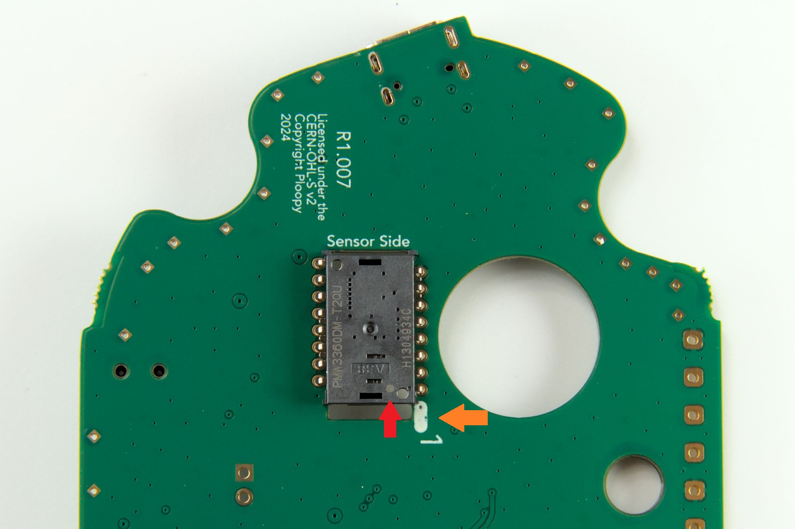

Do not flash new firmware until you've verified that the electronics are all working.
That means, finish building the Classic 2, plug it in, use the stock firmware for about five minutes. Verify that the cursor is moving, and all the buttons are working.
Once you've verified that it all works, you're good to go flashing new firmware.
Do I have the right version of the Classic Trackball?
➡️ Get a #1 Phillips head screwdriver (or similar; you're looking for a small-ish screwdriver here).
💡 A pair of needle-nose pliers and a pair of tweezers are optional, but they'll make future steps easier.
Figure 1: Necessary tools
Step 2
💡 In the photo, a "tab" is being pulled by a pair of pliers.
💡 There may be up to two small tabs on the outside of the PCB.
💡 A pair of pliers will help to gently break the tabs off.
➡️ Break any leftover tabs off the PCB.
Figure 2: Breaking off tabs
Step 3
➡️ Get the Base PCB and the PMW-3360.
💡 The PMW-3360 comes on a pink foam. This is a special anti-static foam that protects the PMW-3360 when it's being transported.
➡️ Remove the PMW-3360 from its foam.
💡 It is very, very easy to solder the PMW-3360 incorrectly. This mistake is almost impossible to fix and will permanently ruin the Classic 2. Follow the next steps very carefully.
✅ Make sure that you see the "Pin 1" dot on the PMW-3360. It's a small, white dot on the back of the chip. 📷 See Figure 3.1 for details.
✅ Make sure that you see the "1" designator on the Base PCB. 📷 See Figure 3.2 for details.
💡 The "Pin 1" dot on the PMW-3360 must be lined up correctly with the "1" designator on the Base PCB. 📷 See Figure 3.3 for a photo showing the correct orientation of the sensor.
➡️ Insert, but do not solder, the PMW-3360 into the Base PCB.
Figure 3.1: Pin 1 dot on the PMW-3360
Figure 3.2: Pin 1 dot on the Base PCB

Figure 3.3: PMW-3360 correctly inserted into Base PCB
Step 4
💡 In order to ensure that you have correctly lined up the PMW-3360 to the Base PCB, we're going to check this here.
✅ Find the white "Pin 1" dot on the PMW-3360, and the "1" designator on the PCB. Compare them again to what you see in 📷 Figure 3.3. Make sure that it lines up exactly the same way.
➡️ Orient the Base PCB so that it's lined up exactly the same as in 📷 Figure 3.3.
✅ Look at the text on the PMW-3360. Make sure that it's oriented the same way as it is in 📷 Figure 3.3.
💡 Quite a few people get through these instructions and still solder the sensor in backwards. Being diligent here will ensure that you're not one of them.
✅ If you are sure that you oriented the PMW-3360 correctly, then proceed.
Step 5
💡 You're going to solder the sensor to the PCB in this step. Consider soldering a single pin while the Base PCB is upside down, specifically the pin directly opposite of the "1" designator (see 📷 Figure 5.1). After that, consider flipping the Base PCB so that it's right-side up and solder the rest of the pins. This ensures that the PMW-3360 is guaranteed to be in the right orientation.
➡️ Solder the PMW-3360 to the Base PCB.
💡 There are two small tabs of orange tape covering the sensors main holes. These protect the sensor from dust ingress during processing.
➡️ Remove the two small tabs of orange tape from the PMW-3360.
💡 Orient the optic correctly before insertion. It should not require a lot of force to insert fully; if it does, remove it and check the orientation before trying again.
➡️ Attach the optic to the PMW-3360. 📷 See Figure 5.2 for details.
Figure 5.1: Recommended pin to start soldering
Figure 5.2: Optic attached to PMW-3360
Step 6
➡️ Get the Base PCB, Vertical PCB, Electronics Assembly Jig, and PCB Anchor. 📷 See Figure 6.1 for details.
💡 The PCB Anchor should insert smoothly into both the Base PCB and Vertical PCB, but if you need to use a bit of force, go ahead.
➡️ Attach the PCB Anchor to the Base PCB. 📷 See Figure 6.2 for details.
➡️ Attach the Vertical PCB to the PCB Anchor. 📷 See Figure 6.3 for details.
➡️ Insert the PCBs into the Electronics Assembly Jig. 📷 See Figure 6.4 for details.
✅ Make sure that the PCBs are seated fully in the Electronics Assembly Jig.
Figure 6.1: Base PCB, Vertical PCB, Electronics Assembly Jig, and PCB Anchor
Figure 6.2: PCB Anchor in Base PCB
Figure 6.3: Vertical PCB in PCB Anchor
Figure 6.4: PCBs in Electronics Assembly Jig
Step 7
💡 Soldering the pads of the Base PCB to the Vertical PCB provides a lot of mechanical strength to the entire assembly. You will probably use a lot more solder than you think.
💡 The PCB Anchor remains in place after the Base PCB is soldered to the Vertical PCB. Although some photos may show that it is not present after the boards have been soldered together, do not remove it at any point.
💡 You're looking for a smooth fillet between the pads of the PCBs, not a bulging joint.
💡 Consider setting the soldering iron's temperature to around 20C higher than normal, as the pads are large and shed heat quickly. This is especially true for Pads 1, 5 and 9 (a.k.a. the pads on either end of the row, and the middle pad). 📷 See Figure 7.1 for details.
➡️ Solder the Base PCB to the Vertical PCB. 📷 See Figure 7.2 for details.
➡️ Once soldered, remove the completed PCBs from the Electronics Assembly Jig.
Figure 7.1: Pads that shed heat quickly
Figure 7.2: PCBs being soldered together
Step 8
💡 The following 3D-printed parts have support material on them:
💡 Top
💡 Primary buttons
💡 Secondary buttons
💡 "Support material" is more hollow than the structural plastic. You'll have to remove it before you continue with the assembly.
💡 You will probably have to use a pair of pliers or tweezers to scrape off support material, as it can stick rather vigourously. Be careful not to damage the parts as you remove the support material, especially on the Scroll Wheel Holder Holder.
➡️ Remove all support material from 3D-printed parts.
✅ Insert of the Metal Dowels into the Top. If it fits snugly in the hole, continue. If it doesn't fit, use a pair of tweezers and scrape any loose support material out of the hole. 📷 See Figure 8 for details.
Figure 8: Checking hole in Top with a Metal Dowel
Step 9
💡 Currently, the kits that we ship are Revision K (you can tell by looking at the Base, which has a "K" written on it).
💡 The Scroll Wheel Holder Holder design significantly changed between Revision J (which is shown in the following pictures) and the current Revision K.
📷 See Video 9 for the current Scroll Wheel Holder Holder and how to insert it into the PCBs.
➡️ Get the PCBs, Scroll Wheel Holder, and Scroll Wheel Holder Holder. 📷 See Figure 9.1 for details.
💡 There are two Scroll Wheel Holder Holders in your kit. The second is a spare; keep it somewhere safe.
💡 Inserting the Scroll Wheel Holder into the Scroll Wheel Holder Holder should be done very gently. These parts are quite delicate. Take your time and don't bend things unnecessarily.
➡️ Insert the Scroll Wheel Holder into the Scroll Wheel Holder Holder. 📷 See Figure 9.2 for details.
💡 During insertion of the Scroll Wheel Holder Holder into the PCB, press the Scroll Wheel Holder Holder on its edges, NOT the middle, as you may break the part if you depress the middle too hard.
➡️ Insert the Scroll Wheel Holder Holder into the PCBs. 📷 See Figure 9.3 for details.
✅ Check to see that the Scroll Wheel Holder Holder is flush against the PCB. If it isn't, try using the second Scroll Wheel Holder Holder in your kit to see if it fits better.
💡 Once you've finished building the Classic 2, if the scroll wheel button is very difficult to press, then it's probably because the Scroll Wheel Holder Holder isn't flush against the PCB.
Figure 9.2: Scroll Wheel Holder inserted into the Scroll Wheel Holder Holder
Figure 9.3: Scroll Wheel Holder Holder inserted into the PCBs
Step 10
➡️ Get the Scroll Wheel, Silicone Ring, and 2x Metal Dowels. 📷 See Figure 10.1 for details.
💡 You will likely require a hammer to push the pin into the scroll wheel. If you don't need one, consider yourself lucky.
💡 The pin on the flat side of the scroll wheel will stick out 10.4mm when the pin is fully inserted. The pin on the other side of the scroll wheel will stuck out 13.6mm when the pin is fully inserted.
➡️ Insert the Metal Dowels into Scroll Wheel. 📷 See Figure 10.2 for details.
➡️ Thread the Silicone Ring onto the Scroll Wheel. 📷 See Figure 10.3 for details.
💡 When inserting the Scroll Wheel into the Scroll Wheel Holder, the parts can be bent slightly, but try hard to minimize the amount that they bend.
➡️ Insert the Scroll Wheel into the Scroll Wheel Holder. 📷 See Figure 10.4 for details.
Figure 10.1: Scroll Wheel, Silicone Ring, and 2x Metal Dowels
Figure 10.2: Metal Dowels in Scroll Wheel
Figure 10.3: Silicone Ring on Scroll Wheel
Figure 10.4: Scroll Wheel in Scroll Wheel Holder Holder
Step 11
➡️ Get the PCBs, Base, Primary Buttons, Secondary Buttons, and 2x Screws. 📷 See Figure 11.1 for details.
➡️ Place the PCBS onto the Base. 📷 See Figure 11.2 for details.
➡️ Screw the Secondary Buttons into the Base. 📷 See Figure 11.3 for details.
➡️ Screw the Primary Buttons into the Base. 📷 See Figure 11.4 for details.
➡️ Get 3x Roller Bearings, 3x Roller Bearing Dowels, and the Bearing Press Jig. 📷 See Figure 12.1 for details.
➡️ Insert a Roller Bearing and a Roller Bearing Dowel into the halves of the Bearing Press Jig. 📷 See Figure 12.2 for details.
💡 Pressing the halves of the Bearing Press Jig together may require a surprising amount of force.
➡️ Press the halves of the Bearing Press Jig together. 📷 See Figure 12.3 for details.
➡️ Remove the bearing from the Bearing Press Jig and repeat two more times for the other Roller Bearings. 📷 See Figure 12.4 for details.
Figure 12.1: Roller Bearings, Roller Bearing Dowels, and the Bearing Press Jig
Figure 12.2: Roller Bearing and a Roller Bearing Dowel in the halves of the Bearing Press Jig
Figure 12.3: Halves of the Bearing Press Jig pressed together
Figure 12.4: Completed Roller
Step 13
➡️ Get the Top and 3x Rollers.
💡 Consider using needle nose pliers to press the Rollers into the Top as that will ensure that the Roller is fully seated.
➡️ Insert Rollers into the Top. 📷 See Figure 13.2 for details.
💡 If the Rollers aren't seated all the way, there's a good chance that tracking performance will be very bad.
✅ Ensure that the Rollers are pressed all the way into the Top, which may require quite a bit of force.
Figure 13: Roller inserted into Top
Step 14
💡 To put the Top on:
💡 Align the USB-C connector with the Top.
💡 Put your thumb on the Primary Buttons and your index and middle finger on the Secondary Buttons, and depress the buttons gently. (They should click.)
💡 Pull the Top (it will bend slightly) until the peg from the Scroll Wheel enters its sheath in the Top.
💡 Press the Top into the Base with gentle but firm pressure until the two are seated together entirely.
💡 Put your thumb on the Primary Buttons and your index and middle finger on the secondary buttons, and depress the buttons gently. (They should click.)
💡 Lift the rear end of the Top until the Scroll Wheel peg slips out of its sheath in the Top.
➡️ Insert the remaining 4x Screws into the Base to screw everything together.
💡 It doesn't really matter where the Friction Pads go, but we like to place them as they appear in 📷 Figure 15.
➡️ Apply the Friction Pads to the Base. 📷 See Figure 15 for details.
➡️ Insert the Ball.
💡 It's possible that the Secondary Buttons rotated "inwards" (towards the PMW sensor) while you were putting the Top on. If they rotate too far inwards, they can become stuck, and won't click. To fix this, use your finger or a pair of tweezers to gently rotate the Secondary Buttons "outwards" (away from the PMW sensor) until they begin to click again.
Figure 15: Screws and Friction Pads applied
Step 16
➡️ Plug the Classic 2 into your computer.
✅ Check that moving the Ball moves the cursor.
Step 17
Figure 17: Completed Classic 2!
💡 Congrats, you finished building the Ploopy Classic 2!
💡 It's done! Love it, use it, but don't you dare abuse it!
Troubleshooting
My buttons "stick".
💡 If your buttons are stuck down and won't click, it's usually because the two front screws are too tight. 📷 See Figure T1 for details.
➡️ Loosen the two front screws. Turn each one by a quarter-turn (or 90 degrees).
✅ Check if the buttons click. If not, loosen the screws a bit more.
 In this section, you'll go over how to build a Classic 2 from the official Ploopy Classic 2 kit.
In this section, you'll go over how to build a Classic 2 from the official Ploopy Classic 2 kit.